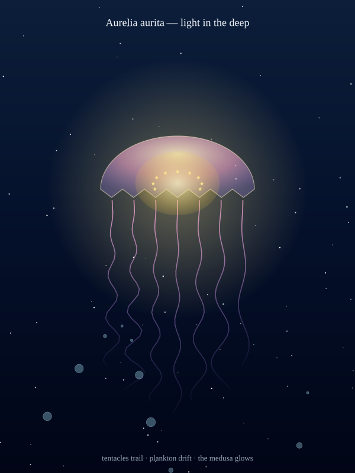

A moon jellyfish drifting through midnight water, drawn from one English sentence. You asked Claude. Glyph drew it — from a compose spec, no hand-tweaked SVG. Translucent bell, sine-modulated tentacles, bioluminescent dots that glow inside the medusa.
"Draw me a jellyfish in the deep. Translucent bell on top, tentacles trailing down in soft sine curves, a warm halo around the bell because real moon jellies bioluminesce. Plankton drifting around. Deep-ocean dark gradient — no horizon, no surface, just the medusa and the dark."
— what to say to your AI agent. Claude writes the Glyph compose spec; the compose compiler emits gradients, glow, ellipse, polyline, and silhouette paths into one byte-locked SVG.

Compose grammar handles the whole anatomy: bell, body, tentacles, halo, plankton — each one a different RFC #9 primitive.
The bell is a single d-string: a semicircular dome on top, then a scalloped V-V-V bottom. Seven tentacles below — each one a sampled sine with amplitude scaled by depth so they fade to nothing at the tips.
A radial-gradient halo behind the bell fades from warm yellow to transparent. Nine star icons placed in a half-ring inside the bell — these are the bright cells real moon jellies use to attract zooplankton.
80 dots placed deterministically by a seeded LCG — they read as plankton in the dark. A linear-gradient rect behind everything provides the deep-ocean blue-to-black backdrop.
Claude writes the compose JSON; Glyph's compose compiler turns it into byte-identical SVG. Try the same seed on Linux, macOS, Windows — the plankton land in exactly the same places every time.
// bio-jellyfish.json — the bell + halo + tentacle defs { "compose": { "viewBox": { "width": 600, "height": 800 }, "theme": { "background": "#010516" }, "defs": { "gradients": [ { "id": "g-bell", "kind": "radial", "cx": "50%", "cy": "30%", "r": "70%", "stops": [ { "offset": "0%", "color": "#fef3c7", "opacity": 0.85 }, { "offset": "55%", "color": "#f9a8d4", "opacity": 0.55 }, { "offset": "100%", "color": "#a78bfa", "opacity": 0.25 } ] } // ... g-tentacle, g-inner, g-halo, g-sea ] }, "children": [ // 1. sea background rect, gradient-filled // 2. starfield 80, seed 11 — the plankton // 3. glow halo behind the bell (radius 220) // 4. 7 tentacle silhouette-paths (sine-modulated) // 5. bell silhouette (scalloped d-string, gradient fill) // 6. inner translucent oval (ellipse, radial-gradient) // 7. 9 star icons inside the bell // 8. 14 bubbles drifting (circles) // 9. title + caption ] } }
The tentacle and bell coordinates are computed once by a small generator script; the resulting JSON is fully static. View on GitHub.
Byte-stable across Ubuntu / macOS / Windows × Node 20 / 22. The compose compiler resolves the gradient + pattern defs first, then walks children in z-order so the bell draws on top of its tentacles.
Compose extends naturally to other soft-bodied animals. A few children + a defs block.
"Draw me a coral polyp opening to feed. Tentacles fanning out from a central mouth. Same dark backdrop, same bioluminescent palette. A scale bar showing 0.5 mm."
"Draw me three cnidarians side by side: a jellyfish, a coral polyp, a sea anemone. All from the same body plan: a digestive sac with tentacles. Show me the family resemblance."
"Animate the jellyfish swimming. Bell contracts then relaxes; tentacles trail behind. One pulse per 3 seconds, the way they really move."
"Show me the moon jelly in a bloom — a hundred of them, scattered with seeded LCG, at the surface of a quiet bay. Same translucent palette."